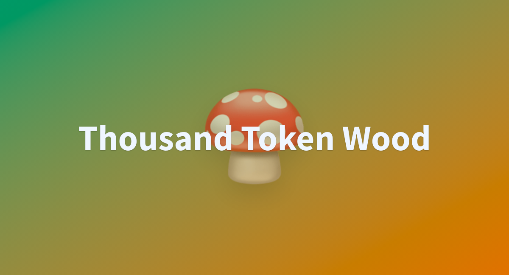
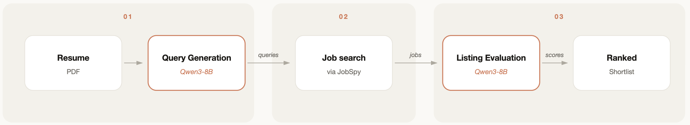

AI 情报日报｜2026-06-08
Sunday, June 8, 2026
全球 AI 24 小时高价值信号
今日头版
AI 的变化正在落到具体工作位置。
小模型被放进模拟社会里观察行为，开发工具开始处理真实协作，基础设施公司继续把 AI 推向工厂、机器人和国家级算力。
前线·AI Agent·产品转折·力量转移
今日信号
Persona Atlas：把人物思维风格画成地图
配图：Persona Atlas · 六位思想者的思维风格可视化 · Hugging Face Build Small Hackathon
一个人的表达方式，可以被模型放进可视化空间。
Persona Atlas 运行在 Hugging Face Inference Providers 上。它尝试把人物的思维方式、表达倾向和观点结构做成一张可以探索的地图。
这对创作者、研究者和教学场景很有用：人可以更快进入一个人的思考方式，也能更清楚地比较不同人物的表达纹理。
来源：Hugging Face · 读原文 · 2026-06-06
前线·AI Agent·产品转折·力量转移
Qwen2.5 小模型被拿来搭多智能体经济体

配图：Thousand Token Wood · 多智能体性格热力图 · Hugging Face Build Small Hackathon
五个小智能体，在一片森林里开始做经济模拟。
开发者用 Qwen2.5-3B 搭了一个五人森林经济体。每个智能体独立运行，通过 vLLM 部署在 Modal 上，再用 Gradio 做交互界面。
这项实验真正观察的是：小模型能不能在多智能体场景里维持角色、目标、交易和协作。
未来一部分模拟、游戏和流程实验，可能会先从小模型开始跑，成本更低，调整也更快。
来源：Hugging Face · 读原文 · 2026-06-06
前线·开源模型·AI Agent·瓶颈倒逼
五个实验室，五个心智：小模型进入金融剧情游戏
Thousand Token Wood v2 把不同实验室的小模型放进同一个金融剧情游戏里。它们各自扮演角色、做决策、互相影响。
普通 benchmark 常看单次问答，这个实验看长期互动和复杂局面里的行为。
小模型能否稳定扮演角色、保持目标、处理经济关系，是它真正有趣的地方。
这类实验会影响团队以后怎样评估 Agent：看答案，也看长期行为。
来源：Hugging Face · 读原文 · 2026-06-07
前线·AI科学·AI Agent·人的选择
微软 Project Mosaic：算力瓶颈正在移到芯片之间
模型越大，芯片之间的路越重要。
微软 Azure CTO Mark Russinovich 在 Build 2026 介绍 Project Mosaic。核心是用 micro-LED 光学互连改善数据中心里的通信和带宽问题。
训练和推理规模继续扩大后，服务器之间怎么传数据，会直接影响成本和速度。
模型能力的上限，越来越受数据中心连接方式影响。
来源：Microsoft Research · 2026-06-06
前线·AI科学·AI Agent·人的选择
工具
AI 求职搜索器：求职开始从搜索变成委托

配图：Job Searcher · 从简历到岗位短列表的完整流程 · Hugging Face Build Small Hackathon
找工作这件事，也开始从搜索变成委托。
Job Searcher 是 Hugging Face 小模型黑客松里的 AI 求职搜索工具。用户上传简历并设定偏好后，系统会帮忙理解岗位、匹配机会，并跑完第一轮筛选。
它的价值很朴素：先从茫茫职位表里，替你筛出一条更像样的路。
对普通人来说，AI 工具的吸引力常常来自这种具体场景：少看一点无效职位，多保留一点判断力。
来源：Hugging Face · 读原文 · 2026-06-06
前线·AI Agent·产品转折
Her：Claude Code 会话分析工具
Her 是一个为 Claude Code 设计的会话分析工具。用户上传 .jsonl 会话文件后，它会重建这段协作：做了什么，卡在哪里，哪些步骤有效，哪些地方浪费了上下文。
AI 编程进入团队之后，大家会追问代码有没有写出来，也会追问这次协作为什么成功或失败。
这类工具的价值在复盘：把一次模糊的"和 AI 搞了一下午"，变成可以讨论、改进和复用的工作记录。
来源：Hugging Face · 读原文 · 2026-06-07
前线·AI Agent·产品转折
OpenRouter 把缓存命中率和有效价格摆到台前
模型成本要看真实命中率。
OpenRouter 在 Pricing 标签里加入实时缓存命中率和历史流量视图。
企业规模化使用模型时，账单会受到缓存、路由、延迟和稳定性的影响。
选模型不能只看标价，还要看请求结构、复用率和系统稳定性。
来源：OpenRouter · 2026-06-07
前线·AI Agent·产品转折
GPT-5.5 与 Opus 4.8 的设计能力差距被放到同一张页面上
模型审美差距，有时会直接体现在一张页面上。
宝玉用同一类设计任务对比 GPT-5.5 和 Opus 4.8 的输出效果。他的观察是：Opus 4.8 在页面完成度、视觉判断和可用性上更好。
这更像一线使用者的温度计，提醒内容、产品和设计团队继续观察模型的视觉判断能力。
来源：宝玉 · 2026-06-07
前线·AI Agent·产品转折
声音
"我不会再轻易照单全收 Apple 在 WWDC 上对 AI 的承诺。2024 年的 Apple Intelligence 已经让很多人被现实教育过一次。"
—— Simon Willison，开发者
声音·哲学反思·对AI的理解变了
"模型的设计能力差距，有时候会直接体现在同一张页面上。真正有用的评测，来自具体任务里的成品差异。"
—— 宝玉，开发者
· 2026-06-07
声音·哲学反思·对AI的理解变了
"小模型被放进多智能体经济体后，真正值得观察的是角色、目标、交易和协作能不能稳定维持。"
—— Hugging Face 社区开发者
声音·哲学反思·对AI的理解变了
趋势
英国借助 NVIDIA 技术推进主权 AI
配图：伦敦塔桥夜景 · 英国主权 AI 从政策口号进入实际建设阶段 · NVIDIA Blog
一年前，英国提出要成为"AI 制造者"。现在这条线进入实际建设阶段：本地 AI 云提供商增加，新的 NVIDIA 系统开始部署。
主权 AI 从政策口号变成了算力和产业动作。
这件事有现实意义：国家级 AI 能力最后要落在数据、算力、云服务和本地产业链上。
来源：NVIDIA · 读原文 · 2026-06-08
趋势·大厂竞争·本地部署·经济学翻转
NVIDIA 与 LG 集团合作建设 AI 工厂
NVIDIA 与 LG 集团合作建设 AI 工厂。这套基础设施会服务 LG 的机器人、自动驾驶、数据中心和 GPU 云服务。
重点是物理 AI：AI 开始进入机器人、工厂和自动驾驶这些需要现实世界反馈的系统。
这条线会影响制造业：模型训练、仿真、机器人测试和生产流程会被放到同一个基础设施里。
来源：NVIDIA · 读原文 · 2026-06-08
趋势·大厂竞争·本地部署·经济学翻转
英伟达与斗山集团合作推进物理 AI
英伟达与斗山集团扩大合作。合作范围覆盖机器人、工程机械、能源和电子材料等板块。
斗山机器人将使用 NVIDIA Isaac Sim 等工具训练和验证机器人能力。
这意味着更多现实世界任务会先进入仿真环境里演练，再回到机器、工厂和现场。
来源：NVIDIA · 读原文 · 2026-06-08
趋势·大厂竞争·本地部署·经济学翻转
今日小结
今天这份电报收进 14 条信号。
第一条线：小模型开始进入复杂场景。森林经济体和金融剧情游戏，都在测试模型能不能长期扮演角色、保持目标、处理关系。
第二条线：工具进入真实工位。求职搜索、Claude Code 会话分析、模型成本视图，都在处理具体、重复、接近日常工作的环节。
第三条线：基础设施继续升温。英国主权 AI、LG AI 工厂、斗山物理 AI、微软光学互连，都在回答同一个问题：模型能力怎样落到算力、机器、工厂和国家级布局里。
明天继续看两件事：好工具会不会真正进入普通团队的日常流程；基础设施公司的密集动作，会不会开始改变模型使用成本。
小结·AI Agent·力量转移
Be Curious 🌌

Comet R3 PanSTARRS Through Time · 彗星 R3 的时间之旅 · NASA APOD · 2026-06-08
每天我们从宇宙深处回望，保持好奇，持续探索。查看原文 →
好奇·宇宙